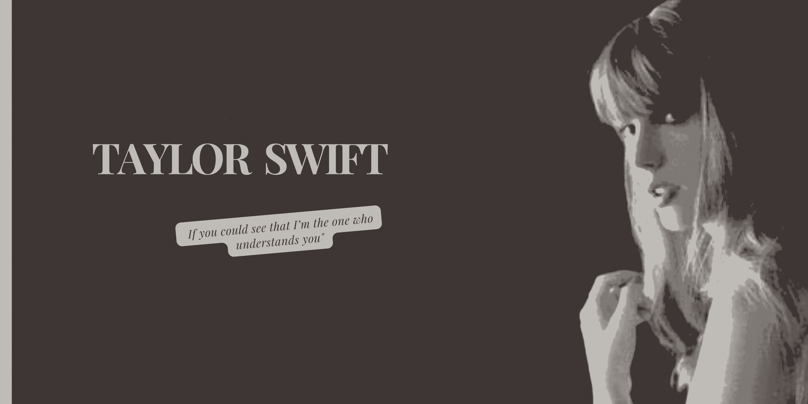
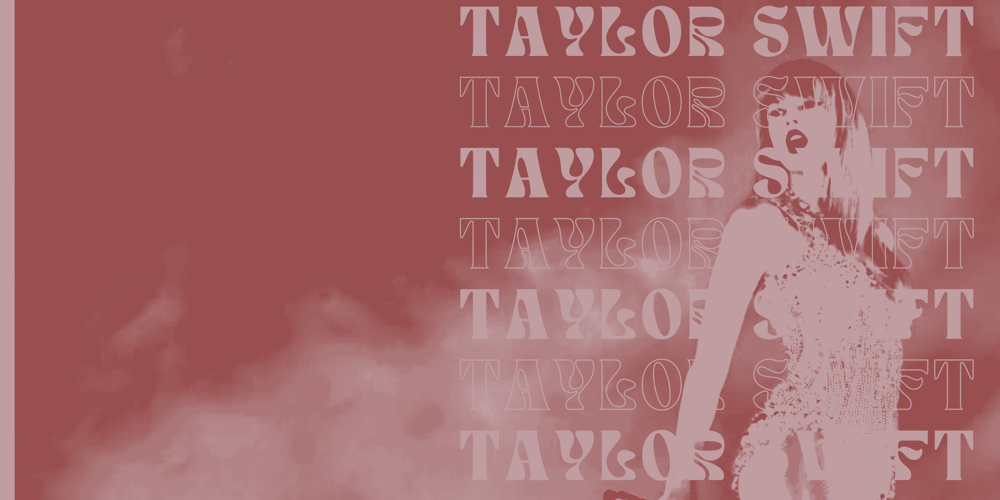
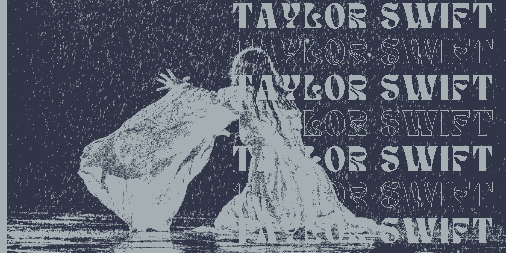
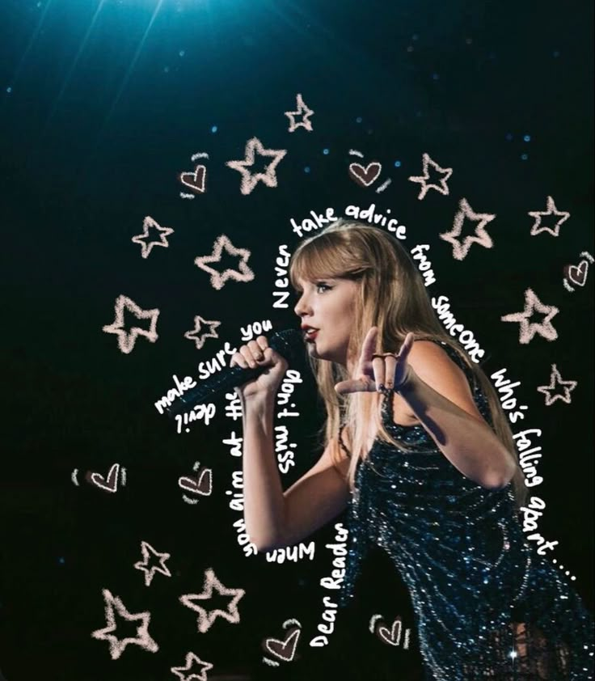

Taylor Swift




“Harás cosas más grandes en tu vida que salir con ese chico del equipo de fútbol/ no lo sabía a los 15”. Aún lejos de sus veintes, ella cantaba su compasivo, sororo y difícil de seguir himno, lleno de consejos para sus adolescentes contemporáneas. (Spoiler: Los chicos siempre mienten sobre todo. Su amiga de la infancia, Abigail Anderson siempre será su BFF más cool; además Taylor fue su dama de honor hace algunos años.
Su mejor verso en esta canción: “Ambas lloramos”.
El momento en el que esta agridulce sinfonía salta de un nueve a un diez llega en el minuto 4:25, cuando parece que la canción ha llegado a su conclusión lógica, hasta que la voz en off del monólogo interior de Taylor Swift irrumpe para susurrar: “Por favor, no estés enamorado de otra persona/Por favor, no tengas a alguien esperando por ti”. En los últimos segundos, para dar el golpe de gracia, hace un dúo consigo misma.
Su mejor verso en esta canción: “la pregunta persistente me mantuvo despierta/ son las 2am ¿A quién amas?”
Nadie hace un despegue emocional de cero a 60 como nuestra chica, y ‘Holy Ground’ es su equivalente a Evel Knievel saltando el cañón del río Snake. Nótese la astuta brillantez con la que roba ese riff de guitarra de los ochenta nada menos que a Billy Idol, convirtiendo este tema en su ‘White Wedding’, así como en su ‘Rebel Yell’. (Aunque la letra habla de bailar con ella misma). Un momento álgido de la gira Red, que muestra las habilidades de Tay como solista de batería.
Su mejor verso en esta canción: “Oye, solo te saltas la conversación cuando ya lo sabes”
Vale, ya sabemos que a Taylor le gusta dejar grandes canciones fuera del álbum, pero esto es ridículo. Tal vez incluso criminal. Sin embargo, de pronto ‘Right Where You Left Me’ tenía que ser un bonus track en Evermore, porque escuchar esta canción una vez significa ponerla en repetición y apagar el flujo del disco. Una década después de que Taylor Swift se sintiera con 22 años, se queda atrapada en los 23, reviviendo el momento en que le rompieron el corazón, todavía sentada en ese restaurante. (¿El mismo en el que tuvieron su primera cita en ‘Begin Again’?) Cada vez que engulle “you left me noooo”, suena más desesperada, sobre el obsesivo gancho de banjo de Aaron Dessner. Ella se siente congelada en el pasado, pero el banjo sigue instándole a moverse mientras pueda.
Su mejor verso de esta canción: “Aún tiene solo 23/ dentro de su fantasía/como se supone que debía ser”
Taylor Alison Swift (West Reading, Pensilvania, 13 de diciembre de 1989) es una cantante, compositora, productora discográfica, directora, actriz y empresaria estadounidense. Criada en Wyomissing (Pensilvania), se mudó a Nashville (Tennessee) a los 14 años para realizar una carrera de música country. Firmó con la compañía discográfica independiente Big Machine Records y se convirtió en la artista más joven contratada por Sony/ATV Music Publishing House.
Taylor comenzó a escribir canciones profesionalmente a los 14 años y firmó con Big Machine Records en 2005 para convertirse en cantante de country, siendo la artista más joven contratada por Sony Music Publishing. Lanzó seis álbumes de estudio bajo el sello, cuatro de ellos para la radio country, empezando con su álbum debut Taylor Swift (2006). Su siguiente álbum, Fearless (2008), exploró el country pop y sus sencillos «Love Story» y «You Belong with Me» la catapultó a la fama, siendo el álbum más premiado en la historia de la música country.3 En 2010, Speak Now trajo la influencia rock, vendiendo un millón de copias en su primera semana en los Estados Unidos. Mientras tanto, Red (2012) experimentó con elementos electrónicos y presentó la primera canción número uno del Billboard Hot 100 de Taylor, «We Are Never Ever Getting Back Together». Su quinto álbum, 1989 (2014) la alejo de su imagen country,4 acercándola al synth-pop respaldado por las canciones que encabezaron las listas «Shake It Off», «Blank Space» y «Bad Blood», que convirtieron a Taylor en la primera mujer en los cincuenta y seis años del Billboard Hot 100 en destronar a su propia canción y sustituirse a sí misma en el primer lugar.5 El escrutinio de los medios inspiró Reputation (2017) con un estilo a hip-hop, que logró que su sencillo «Look What You Made Me Do» llegara al número uno.
Los 10 temas de Taylor Swift que llegaron al número uno
“We Are Never Ever Getting Back Together” (2012) Como siempre. ...
“Shake It Off” (2014) ...
“Blank Space“ (2014) ...
“Bad Blood“ (2014) ...
“Look What You Made Me Do“ (2017) ...
“Cardigan“ (2020) ...
“Willow“ (2020) ...
“All Too Well“ (2012-2021)
La gira de Taylor Swift llegará a nuestro país en pocos días. Los 'Swifties', que así se hacen llamar los fans de la cantante, de España ya están preparados para la llegada de la cantante y en redes sociales es posible ver numerosos vídeos de como diseñan sus propios looks, basados en su música, así como trucos para disfrutar al máximo del concierto. Y es que esta gira es muy especial ya que, como explica Maya Pixelskaya, "nunca nadie ha hecho una gira tan grande como esta".
Dentro del 'The Eras Tour', Taylor dará un total de 149 conciertos por cuatro continentes. "Pensad que cobra la nada desdeñable cifra de 11 millones de euros por cada uno", explica la zapeadora. "En parte es porque el precio medio de verla en directo es el precio más alto de todas las estrellas de la música, 1.004 euros", apunta Maya.

.png)